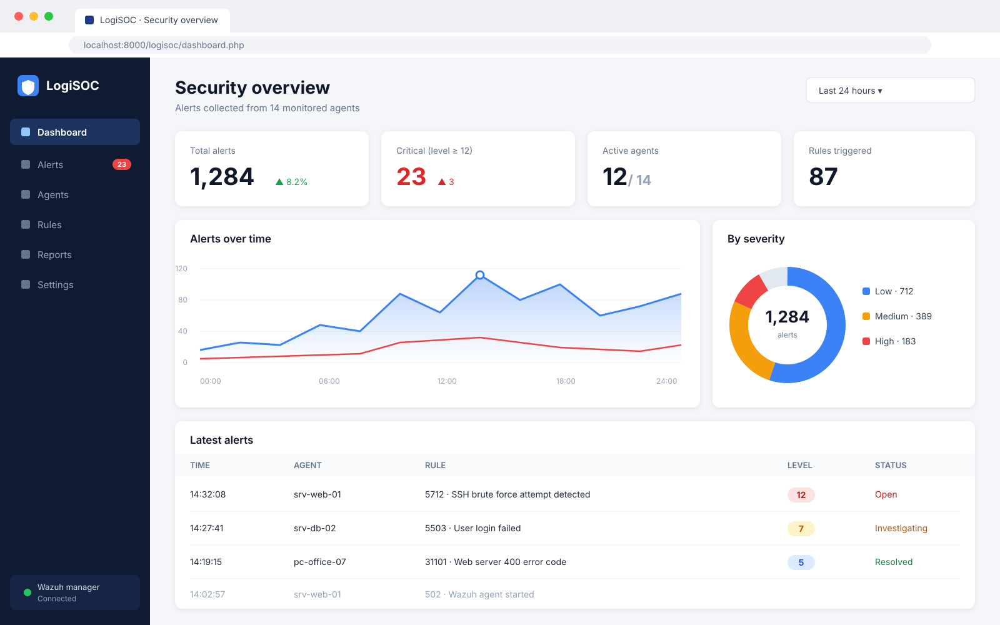
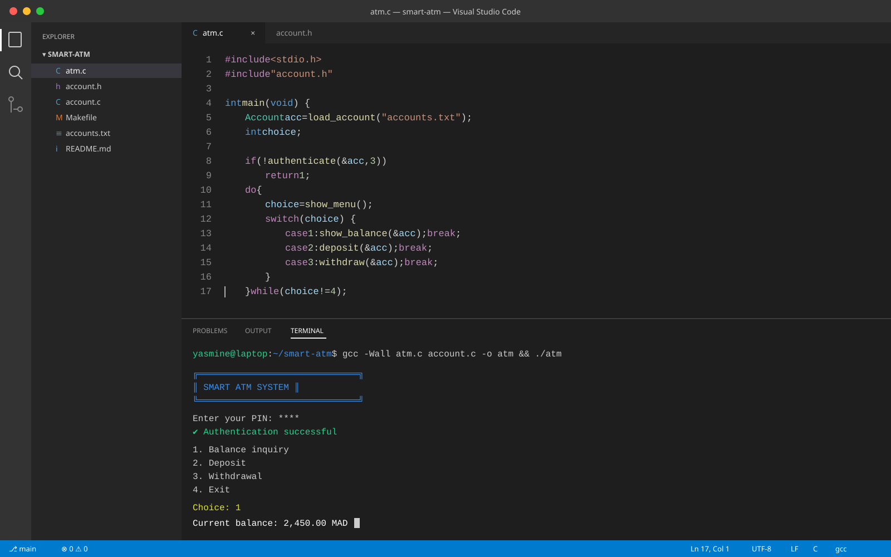

Cybersecurity
LogiSOC
A PHP interface for visualising security alerts, built during my internship at COMANAV / CMA CGM.
A collection of projects that reflect my skills, curiosity, and passion for technology.

A PHP interface for visualising security alerts, built during my internship at COMANAV / CMA CGM.

A C-based ATM simulation featuring structured banking operations and user interaction.

A C++ fighting game built around object-oriented programming and character interactions.

A UML-based university registration system designed around requirements and system modelling.

A collaborative time-management application for managing users, working hours and clock-in activities.